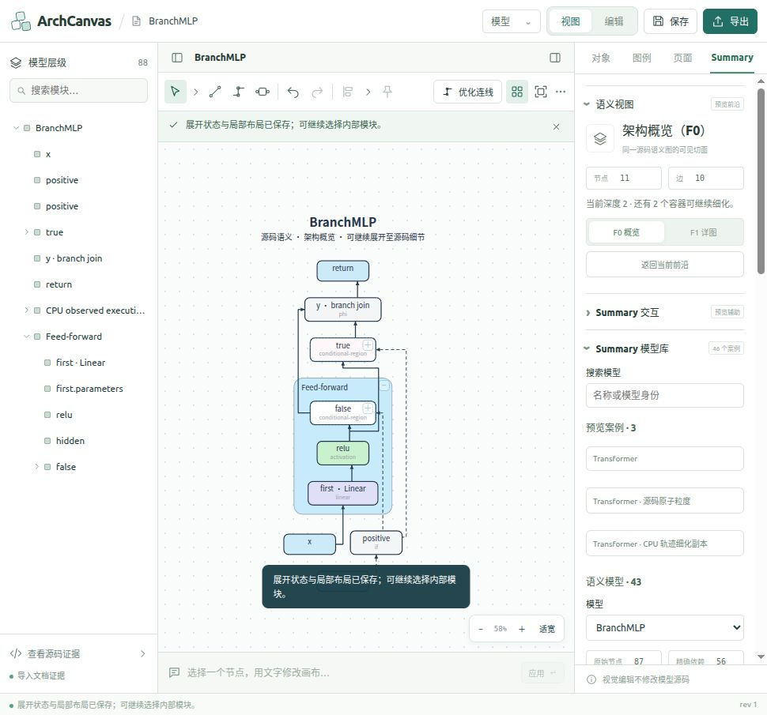

Summary 全案例逐层展开截图
真实主程序截图；点击查看原图及同名 JSON。源码/布局校验通过不等于重新执行 Python。大图的后台布线后导入方式见测试报告。
Transformer · 语义架构
MultilayerPerceptron · mlp
ConvNet · cnn
LeNet5 · cnn
Autoencoder · autoencoder
VariationalAutoencoder · autoencoder
RNN · rnn
GraphNet · gnn
BranchMLP

01-f0 · 11 节点 / 10 依赖 · 校验通过 · DOM/语义记录
02-module-f1 · 11 节点 / 10 依赖 · 校验通过 · DOM/语义记录
03-module-detailed · 11 节点 / 10 依赖 · 校验通过 · DOM/语义记录
04-module-source-depth1 · 14 节点 / 12 依赖 · 校验通过 · DOM/语义记录
04b-sibling-semantic · 14 节点 / 12 依赖 · 校验通过 · DOM/语义记录
05-source-all · 18 节点 / 16 依赖 · 校验通过 · DOM/语义记录
TinyCNN
01-f0 · 9 节点 / 6 依赖 · 校验通过 · DOM/语义记录
02-module-f1 · 9 节点 / 6 依赖 · 校验通过 · DOM/语义记录
03-module-detailed · 9 节点 / 6 依赖 · 校验通过 · DOM/语义记录
04-module-source-depth1 · 12 节点 / 9 依赖 · 校验通过 · DOM/语义记录
05-source-all · 14 节点 / 11 依赖 · 校验通过 · DOM/语义记录
ReusedRecurrent
01-f0 · 7 节点 / 6 依赖 · 校验通过 · DOM/语义记录
02-module-f1 · 7 节点 / 6 依赖 · 校验通过 · DOM/语义记录
03-module-detailed · 7 节点 / 6 依赖 · 校验通过 · DOM/语义记录
04-module-source-depth1 · 13 节点 / 12 依赖 · 校验通过 · DOM/语义记录
05-source-all · 13 节点 / 12 依赖 · 校验通过 · DOM/语义记录
ConvVariationalAutoencoder · corpus ae-conv-var
01-f0 · 27 节点 / 26 依赖 · 校验通过 · DOM/语义记录
02-module-f1 · 27 节点 / 26 依赖 · 校验通过 · DOM/语义记录
03-module-detailed · 34 节点 / 32 依赖 · 校验通过 · DOM/语义记录
04-module-source-depth1 · 35 节点 / 37 依赖 · 校验通过 · DOM/语义记录
04b-sibling-semantic · 35 节点 / 37 依赖 · 校验通过 · DOM/语义记录
05-source-all · 83 节点 / 80 依赖 · 校验通过 · DOM/语义记录
VGG16 · corpus cnn-vgg16
01-f0 · 28 节点 / 21 依赖 · 校验通过 · DOM/语义记录
02-module-f1 · 28 节点 / 21 依赖 · 校验通过 · DOM/语义记录
03-module-detailed · 32 节点 / 23 依赖 · 校验通过 · DOM/语义记录
04-module-source-depth1 · 29 节点 / 22 依赖 · 校验通过 · DOM/语义记录
04b-sibling-semantic · 29 节点 / 22 依赖 · 校验通过 · DOM/语义记录
05-source-all · 76 节点 / 57 依赖 · 校验通过 · DOM/语义记录
NiN · corpus nin-cifar10_filter-response-norm
01-f0 · 7 节点 / 6 依赖 · 校验通过 · DOM/语义记录
02-module-f1 · 7 节点 / 6 依赖 · 校验通过 · DOM/语义记录
03-module-detailed · 33 节点 / 33 依赖 · 校验通过 · DOM/语义记录
04-module-source-depth1 · 29 节点 / 27 依赖 · 校验通过 · DOM/语义记录
04b-sibling-semantic · 32 节点 / 29 依赖 · 校验通过 · DOM/语义记录
05-source-all · 245 节点 / 243 依赖 · 校验通过 · DOM/语义记录
05b-routing-pass1 · 245 节点 / 243 依赖 · 校验通过 · DOM/语义记录
ResidualBlock · corpus resnet-ex-1
01-f0 · 14 节点 / 13 依赖 · 校验通过 · DOM/语义记录
02-module-f1 · 14 节点 / 13 依赖 · 校验通过 · DOM/语义记录
03-module-detailed · 14 节点 / 13 依赖 · 校验通过 · DOM/语义记录
04-module-source-depth1 · 29 节点 / 29 依赖 · 校验通过 · DOM/语义记录
05-source-all · 29 节点 / 29 依赖 · 校验通过 · DOM/语义记录
ConvNet · corpus resnet-ex-1
01-f0 · 20 节点 / 19 依赖 · 校验通过 · DOM/语义记录
02-module-f1 · 20 节点 / 19 依赖 · 校验通过 · DOM/语义记录
03-module-detailed · 20 节点 / 19 依赖 · 校验通过 · DOM/语义记录
04-module-source-depth1 · 37 节点 / 37 依赖 · 校验通过 · DOM/语义记录
04b-sibling-semantic · 37 节点 / 37 依赖 · 校验通过 · DOM/语义记录
05-source-all · 72 节点 / 73 依赖 · 校验通过 · DOM/语义记录
GraphNet · corpus gnn-basic-graph-spectral-1
01-f0 · 28 节点 / 21 依赖 · 校验通过 · DOM/语义记录
02-module-f1 · 21 节点 / 21 依赖 · 校验通过 · DOM/语义记录
03-module-detailed · 28 节点 / 21 依赖 · 校验通过 · DOM/语义记录
04-module-source-depth1 · 36 节点 / 41 依赖 · 校验通过 · DOM/语义记录
05-source-all · 36 节点 / 41 依赖 · 校验通过 · DOM/语义记录
RNN · corpus rnn_lstm_bi_imdb
01-f0 · 14 节点 / 13 依赖 · 校验通过 · DOM/语义记录
02-module-f1 · 14 节点 / 13 依赖 · 校验通过 · DOM/语义记录
03-module-detailed · 14 节点 / 13 依赖 · 校验通过 · DOM/语义记录
04-module-source-depth1 · 22 节点 / 21 依赖 · 校验通过 · DOM/语义记录
05-source-all · 22 节点 / 21 依赖 · 校验通过 · DOM/语义记录
DistilBERTClass · corpus distilbert-v0
01-f0 · 13 节点 / 9 依赖 · 校验通过 · DOM/语义记录
02-module-f1 · 13 节点 / 9 依赖 · 校验通过 · DOM/语义记录
03-module-detailed · 13 节点 / 9 依赖 · 校验通过 · DOM/语义记录
04-module-source-depth1 · 14 节点 / 10 依赖 · 校验通过 · DOM/语义记录
05-source-all · 18 节点 / 14 依赖 · 校验通过 · DOM/语义记录
ForeignComposition
01-f0 · 28 节点 / 30 依赖 · 校验通过 · DOM/语义记录
02-module-f1 · 28 节点 / 30 依赖 · 校验通过 · DOM/语义记录
03-module-detailed · 36 节点 / 37 依赖 · 校验通过 · DOM/语义记录
04-module-source-depth1 · 51 节点 / 53 依赖 · 校验通过 · DOM/语义记录
04b-sibling-semantic · 51 节点 / 53 依赖 · 校验通过 · DOM/语义记录
05-source-all · 75 节点 / 77 依赖 · 校验通过 · DOM/语义记录
BrokenCell
01-f0 · 10 节点 / 7 依赖 · 校验通过 · DOM/语义记录
02-module-f1 · 10 节点 / 7 依赖 · 校验通过 · DOM/语义记录
03-module-detailed · 10 节点 / 7 依赖 · 校验通过 · DOM/语义记录
04-module-source-depth1 · 13 节点 / 11 依赖 · 校验通过 · DOM/语义记录
05-source-all · 13 节点 / 11 依赖 · 校验通过 · DOM/语义记录
BeforeNorm
01-f0 · 10 节点 / 7 依赖 · 校验通过 · DOM/语义记录
02-module-f1 · 10 节点 / 7 依赖 · 校验通过 · DOM/语义记录
03-module-detailed · 10 节点 / 7 依赖 · 校验通过 · DOM/语义记录
04-module-source-depth1 · 11 节点 / 10 依赖 · 校验通过 · DOM/语义记录
05-source-all · 11 节点 / 10 依赖 · 校验通过 · DOM/语义记录
DisconnectedNorm
01-f0 · 7 节点 / 5 依赖 · 校验通过 · DOM/语义记录
02-module-f1 · 7 节点 / 5 依赖 · 校验通过 · DOM/语义记录
03-module-detailed · 7 节点 / 5 依赖 · 校验通过 · DOM/语义记录
04-module-source-depth1 · 9 节点 / 7 依赖 · 校验通过 · DOM/语义记录
05-source-all · 9 节点 / 7 依赖 · 校验通过 · DOM/语义记录
UnknownFusion
01-f0 · 13 节点 / 11 依赖 · 校验通过 · DOM/语义记录
02-module-f1 · 13 节点 / 11 依赖 · 校验通过 · DOM/语义记录
03-module-detailed · 13 节点 / 11 依赖 · 校验通过 · DOM/语义记录
04-module-source-depth1 · 19 节点 / 18 依赖 · 校验通过 · DOM/语义记录
05-source-all · 21 节点 / 20 依赖 · 校验通过 · DOM/语义记录
SharedBranches
01-f0 · 6 节点 / 5 依赖 · 校验通过 · DOM/语义记录
02-module-f1 · 6 节点 / 5 依赖 · 校验通过 · DOM/语义记录
03-module-detailed · 6 节点 / 5 依赖 · 校验通过 · DOM/语义记录
04-module-source-depth1 · 8 节点 / 7 依赖 · 校验通过 · DOM/语义记录
05-source-all · 8 节点 / 7 依赖 · 校验通过 · DOM/语义记录
LoopWithBoundary
01-f0 · 17 节点 / 13 依赖 · 校验通过 · DOM/语义记录
02-module-f1 · 17 节点 / 13 依赖 · 校验通过 · DOM/语义记录
03-module-detailed · 17 节点 / 13 依赖 · 校验通过 · DOM/语义记录
04-module-source-depth1 · 13 节点 / 11 依赖 · 校验通过 · DOM/语义记录
05-source-all · 25 节点 / 22 依赖 · 校验通过 · DOM/语义记录
RepeatedFragments
01-f0 · 26 节点 / 19 依赖 · 校验通过 · DOM/语义记录
02-module-f1 · 26 节点 / 19 依赖 · 校验通过 · DOM/语义记录
03-module-detailed · 26 节点 / 19 依赖 · 校验通过 · DOM/语义记录
04-module-source-depth1 · 32 节点 / 26 依赖 · 校验通过 · DOM/语义记录
04b-sibling-semantic · 32 节点 / 26 依赖 · 校验通过 · DOM/语义记录
05-source-all · 45 节点 / 42 依赖 · 校验通过 · DOM/语义记录
BranchMosaic
01-f0 · 29 节点 / 23 依赖 · 校验通过 · DOM/语义记录
02-module-f1 · 29 节点 / 23 依赖 · 校验通过 · DOM/语义记录
03-module-detailed · 29 节点 / 23 依赖 · 校验通过 · DOM/语义记录
04-module-source-depth1 · 29 节点 / 28 依赖 · 校验通过 · DOM/语义记录
04b-sibling-semantic · 29 节点 / 28 依赖 · 校验通过 · DOM/语义记录
05-source-all · 41 节点 / 41 依赖 · 校验通过 · DOM/语义记录
WideBranches
01-f0 · 34 节点 / 27 依赖 · 校验通过 · DOM/语义记录
02-module-f1 · 34 节点 / 27 依赖 · 校验通过 · DOM/语义记录
03-module-detailed · 34 节点 / 27 依赖 · 校验通过 · DOM/语义记录
04-module-source-depth1 · 39 节点 / 44 依赖 · 校验通过 · DOM/语义记录
05-source-all · 39 节点 / 44 依赖 · 校验通过 · DOM/语义记录
WovenFusion
01-f0 · 25 节点 / 26 依赖 · 校验通过 · DOM/语义记录
02-module-f1 · 20 节点 / 26 依赖 · 校验通过 · DOM/语义记录
03-module-detailed · 25 节点 / 26 依赖 · 校验通过 · DOM/语义记录
04-module-source-depth1 · 35 节点 / 41 依赖 · 校验通过 · DOM/语义记录
05-source-all · 35 节点 / 41 依赖 · 校验通过 · DOM/语义记录
GatedMixture
01-f0 · 19 节点 / 18 依赖 · 校验通过 · DOM/语义记录
02-module-f1 · 19 节点 / 18 依赖 · 校验通过 · DOM/语义记录
03-module-detailed · 19 节点 / 18 依赖 · 校验通过 · DOM/语义记录
04-module-source-depth1 · 25 节点 / 27 依赖 · 校验通过 · DOM/语义记录
05-source-all · 25 节点 / 27 依赖 · 校验通过 · DOM/语义记录
ShapeDrivenFusion
01-f0 · 11 节点 / 10 依赖 · 校验通过 · DOM/语义记录
02-module-f1 · 11 节点 / 10 依赖 · 校验通过 · DOM/语义记录
03-module-detailed · 11 节点 / 10 依赖 · 校验通过 · DOM/语义记录
04-module-source-depth1 · 17 节点 / 17 依赖 · 校验通过 · DOM/语义记录
05-source-all · 17 节点 / 17 依赖 · 校验通过 · DOM/语义记录
ImageResidual
01-f0 · 8 节点 / 5 依赖 · 校验通过 · DOM/语义记录
02-module-f1 · 8 节点 / 5 依赖 · 校验通过 · DOM/语义记录
03-module-detailed · 8 节点 / 5 依赖 · 校验通过 · DOM/语义记录
04-module-source-depth1 · 9 节点 / 6 依赖 · 校验通过 · DOM/语义记录
05-source-all · 13 节点 / 11 依赖 · 校验通过 · DOM/语义记录
VectorResidual
01-f0 · 6 节点 / 5 依赖 · 校验通过 · DOM/语义记录
02-module-f1 · 10 节点 / 8 依赖 · 校验通过 · DOM/语义记录
03-module-detailed · 10 节点 / 8 依赖 · 校验通过 · DOM/语义记录
04-module-source-depth1 · 14 节点 / 12 依赖 · 校验通过 · DOM/语义记录
05-source-all · 15 节点 / 13 依赖 · 校验通过 · DOM/语义记录
VectorBlock
01-f0 · 7 节点 / 5 依赖 · 校验通过 · DOM/语义记录
02-module-f1 · 7 节点 / 5 依赖 · 校验通过 · DOM/语义记录
03-module-detailed · 7 节点 / 5 依赖 · 校验通过 · DOM/语义记录
04-module-source-depth1 · 9 节点 / 7 依赖 · 校验通过 · DOM/语义记录
05-source-all · 9 节点 / 7 依赖 · 校验通过 · DOM/语义记录
ConditionalResidual
01-f0 · 10 节点 / 10 依赖 · 校验通过 · DOM/语义记录
02-module-f1 · 10 节点 / 10 依赖 · 校验通过 · DOM/语义记录
03-module-detailed · 10 节点 / 10 依赖 · 校验通过 · DOM/语义记录
04-module-source-depth1 · 13 节点 / 12 依赖 · 校验通过 · DOM/语义记录
04b-sibling-semantic · 13 节点 / 12 依赖 · 校验通过 · DOM/语义记录
05-source-all · 16 节点 / 14 依赖 · 校验通过 · DOM/语义记录
ConvStack
01-f0 · 4 节点 / 2 依赖 · 校验通过 · DOM/语义记录
02-module-f1 · 4 节点 / 2 依赖 · 校验通过 · DOM/语义记录
03-module-detailed · 4 节点 / 2 依赖 · 校验通过 · DOM/语义记录
04-module-source-depth1 · 7 节点 / 3 依赖 · 校验通过 · DOM/语义记录
05-source-all · 13 节点 / 7 依赖 · 校验通过 · DOM/语义记录
HeterogeneousStack
01-f0 · 4 节点 / 2 依赖 · 校验通过 · DOM/语义记录
02-module-f1 · 4 节点 / 2 依赖 · 校验通过 · DOM/语义记录
03-module-detailed · 4 节点 / 2 依赖 · 校验通过 · DOM/语义记录
04-module-source-depth1 · 8 节点 / 4 依赖 · 校验通过 · DOM/语义记录
05-source-all · 23 节点 / 16 依赖 · 校验通过 · DOM/语义记录
SameSource
01-f0 · 4 节点 / 4 依赖 · 校验通过 · DOM/语义记录
02-module-f1 · 17 节点 / 17 依赖 · 校验通过 · DOM/语义记录
03-module-detailed · 38 节点 / 40 依赖 · 校验通过 · DOM/语义记录
04-module-source-depth1 · 25 节点 / 24 依赖 · 校验通过 · DOM/语义记录
05-source-all · 82 节点 / 87 依赖 · 校验通过 · DOM/语义记录
TwoSources
01-f0 · 5 节点 / 4 依赖 · 校验通过 · DOM/语义记录
02-module-f1 · 18 节点 / 17 依赖 · 校验通过 · DOM/语义记录
03-module-detailed · 39 节点 / 40 依赖 · 校验通过 · DOM/语义记录
04-module-source-depth1 · 26 节点 / 24 依赖 · 校验通过 · DOM/语义记录
05-source-all · 83 节点 / 87 依赖 · 校验通过 · DOM/语义记录
SharedStack
01-f0 · 4 节点 / 2 依赖 · 校验通过 · DOM/语义记录
02-module-f1 · 4 节点 / 2 依赖 · 校验通过 · DOM/语义记录
03-module-detailed · 4 节点 / 2 依赖 · 校验通过 · DOM/语义记录
04-module-source-depth1 · 8 节点 / 4 依赖 · 校验通过 · DOM/语义记录
05-source-all · 38 节点 / 31 依赖 · 校验通过 · DOM/语义记录
IndependentStack
01-f0 · 4 节点 / 2 依赖 · 校验通过 · DOM/语义记录
02-module-f1 · 4 节点 / 2 依赖 · 校验通过 · DOM/语义记录
03-module-detailed · 4 节点 / 2 依赖 · 校验通过 · DOM/语义记录
04-module-source-depth1 · 8 节点 / 4 依赖 · 校验通过 · DOM/语义记录
05-source-all · 38 节点 / 31 依赖 · 校验通过 · DOM/语义记录
Transformer · CPU 运行证据
01-f0 · 30 节点 / 23 依赖 · 校验通过 · DOM/语义记录
native-02-encoder-f1 · 30 节点 / 23 依赖 · 校验通过 · DOM/语义记录
native-03-encoder-detailed · 30 节点 / 23 依赖 · 校验通过 · DOM/语义记录
native-04-encoder-source-depth1 · 24 节点 / 19 依赖 · 校验通过 · DOM/语义记录
native-05-encoder-source-depth3 · 47 节点 / 39 依赖 · 校验通过 · DOM/语义记录
native-06-encoder-source-all · 235 节点 / 242 依赖 · 校验通过 · DOM/语义记录
native-07-encoder-atoms-decoder-f1 · 235 节点 / 242 依赖 · 校验通过 · DOM/语义记录
native-08-encoder-atoms-decoder-depth3 · 264 节点 / 270 依赖 · 校验通过 · DOM/语义记录
native-09-ffn-reading · 264 节点 / 270 依赖 · 校验通过 · DOM/语义记录
native-10-source-complete · 626 节点 / 663 依赖 · 校验通过 · DOM/语义记录
native-11-source-ffn-reading · 626 节点 / 663 依赖 · 校验通过 · DOM/语义记录
Transformer 预览
legacy-01-f0 · 23 节点 / 25 依赖 · 校验通过 · DOM/语义记录
legacy-02-encoder-f1 · 38 节点 / 42 依赖 · 校验通过 · DOM/语义记录
legacy-03-encoder-atoms · 47 节点 / 49 依赖 · 校验通过 · DOM/语义记录
legacy-04-both-atoms · 83 节点 / 85 依赖 · 校验通过 · DOM/语义记录
legacy-05-edit-mode · None 节点 / None 依赖 · 编辑模式证据 · DOM/语义记录
legacy-06-return-view · 83 节点 / 85 依赖 · 校验通过 · DOM/语义记录
Transformer · 源码原子粒度
legacy-01-f0 · 23 节点 / 25 依赖 · 校验通过 · DOM/语义记录
legacy-02-encoder-f1 · 38 节点 / 42 依赖 · 校验通过 · DOM/语义记录
legacy-03-encoder-atoms · 47 节点 / 49 依赖 · 校验通过 · DOM/语义记录
legacy-04-both-atoms · 83 节点 / 85 依赖 · 校验通过 · DOM/语义记录
legacy-05-encoder-f0-decoder-atoms · 59 节点 / 61 依赖 · 校验通过 · DOM/语义记录
Transformer · CPU 轨迹细化副本
legacy-01-f0 · 16 节点 / 23 依赖 · 校验通过 · DOM/语义记录
legacy-02-encoder-f1 · 16 节点 / 23 依赖 · 校验通过 · DOM/语义记录
legacy-03-encoder-atoms · 113 节点 / 99 依赖 · 校验通过 · DOM/语义记录
legacy-04-encoder-atoms-decoder-f1 · 113 节点 / 99 依赖 · 校验通过 · DOM/语义记录
legacy-05-both-atoms · 285 节点 / 238 依赖 · 校验通过 · DOM/语义记录
legacy-06-whole-complete · 306 节点 / 250 依赖 · 校验通过 · DOM/语义记录
legacy-07-ffn-reading · 306 节点 / 250 依赖 · 校验通过 · DOM/语义记录